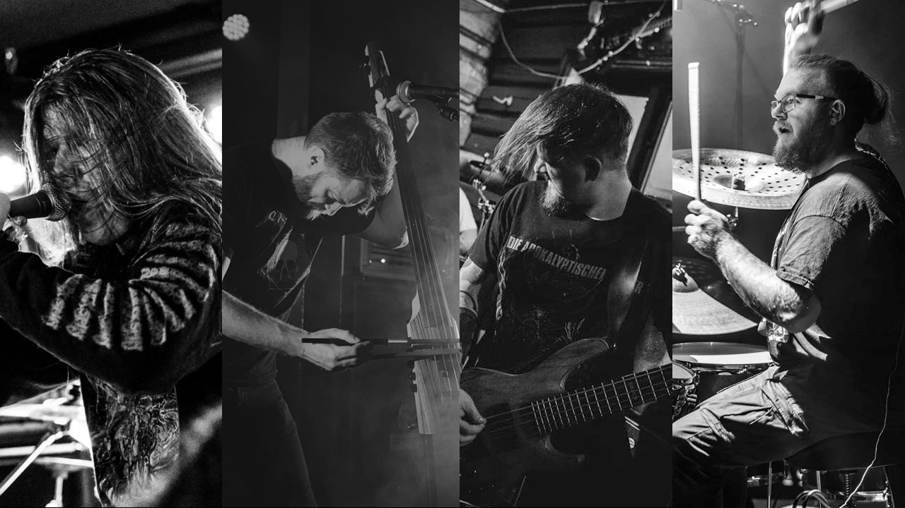

---== Hermit Dreams ==---
Obscure and experimental death metal from Norway
Hermit Dreams is a new experimental death metal band from Norway, featuring experienced musicians from a wide array of metal bands from the national scene, current and past. The band explores topics revolving around loneliness, anxiety, fear, transience, wonder and confusion in the context of death metal with elements of doom and progressive outbursts.
The instrumentation applied is somewhat out of the ordinary, with banjo, cello and bowed upright bass taking up much of the sonic space, along with the more traditional guitar, bass guitar and drums.
The project started out as a creative outlet for Eyvind's songwriting, allowing a somewhat different take on obscure and weird death metal that did not fit comfortably within the (admittedly already rather wide) Diskord frame. After putting together a strong lineup of musical acquaintances, the band is now ready to present their material.
Lineup
Left to right in photo:
Eirik Waadeland: Vocals (Ruun, Celestial Scourge)
Eyvind W. Axelsen: Cello, upright bass, bass guitar (Diskord)
Martin Storn-Olsen: Banjo, guitar (Vingulmork, Defect Designer)
Follow Us
Instagram